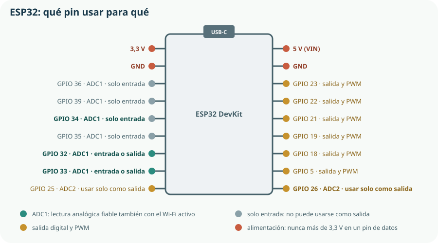

Este es el tema central del bloque. Con los condicionales y los bucles se completan las tres estructuras de la programación estructurada del Tema 12; con las funciones, el programa deja de ser una lista de líneas y se convierte en algo que se puede organizar y comprobar por partes; y con la placa, el código sale de la pantalla. Las funciones llegan aquí a propósito, y no al final del bloque: sin ellas, todo lo que viene después se escribiría de una sola pieza.
- escribir condicionales simples, dobles y múltiples, y condiciones compuestas;
- recorrer una secuencia con un bucle
fory usar contadores y acumuladores; - escribir un bucle
whilecon una condición de parada que se cumpla de verdad; - reconocer un bucle infinito, distinguir cuándo es un error y cuándo es lo deseado, e interrumpirlo;
- combinar selección e iteración en estructuras anidadas sin perder la legibilidad;
- definir funciones con parámetros y valor de retorno, y llamarlas;
- explicar el ámbito local y global, y separar cálculo, entrada y presentación;
- trazar la ejecución de una función y predecir su estado final;
- escribir en MicroPython un programa que encienda una salida, lea una entrada digital y mida un sensor analógico en el ESP32.
1. Condicionales: if, else
Un condicional ejecuta un bloque solo si se cumple una condición. La condición es una expresión booleana de las del Tema 13.
# Selección simple: hacer algo o no hacer nada
humedad = 410
UMBRAL = 500
if humedad < UMBRAL:
print("Sustrato seco: hay que regar")# Selección doble: uno de los dos caminos, siempre
if humedad < UMBRAL:
print("Sustrato seco: hay que regar")
else:
print("Humedad suficiente: no regar")if termina siempre en dos puntos, y lo que depende de la condición va sangrado cuatro espacios. No hay llaves ni fin si: el bloque termina cuando el sangrado vuelve al nivel anterior. Es la sintaxis del Tema 12 en acción, y el IndentationError más frecuente viene de aquí.Condiciones compuestas
humedad = 410
hora = 8
modo_manual = False
# Tres condiciones a la vez, con nombres del Tema 13
seco = humedad < UMBRAL
en_horario = 7 <= hora < 10
if seco and en_horario and not modo_manual:
print("Regar 30 s")
else:
print("No regar")a and b, si a es falso Python ni siquiera mira b: el resultado ya está decidido. Eso permite un truco muy útil en programas de control: poner primero la comprobación que evita el error. if lecturas > 0 and total / lecturas < 500: nunca divide entre cero, porque si lecturas es cero la segunda parte no se evalúa.2. Selección múltiple: elif
lectura = 2847 # cuentas del ADC de 12 bits
if lectura < 1200:
estado = "saturado"
elif lectura < 2000:
estado = "húmedo"
elif lectura < 3000:
estado = "seco"
else:
estado = "muy seco o sensor desconectado"
print("Estado del sustrato:", estado) # secoelif 1200 <= lectura < 2000: si hemos llegado a ese elif, ya sabemos que la lectura no era menor de 1200. Y por eso el orden no es indiferente: si pusieras lectura < 3000 primero, las lecturas saturadas entrarían por esa rama y las dos siguientes no se alcanzarían nunca.else final es una red de seguridad. En la tabla anterior recoge el caso «muy seco o sensor desconectado», y no es un detalle decorativo: un sensor con el cable suelto da lecturas al máximo, indistinguibles de un sustrato desértico. Un programa de control debe tener siempre una rama para «esto no debería pasar», porque en el huerto pasa. Lo formalizaremos en el Tema 18 como estado de fallo.3. Bucles de recorrido: for
Un bucle for repite un bloque una vez por cada elemento de una secuencia. Es el bucle que se usa cuando se sabe de antemano cuántas repeticiones hay.
# Recorrer una lista de medidas
medidas = [420, 515, 380, 610]
for medida in medidas:
print("Lectura:", medida)
# Recorrer un rango de números
for i in range(5): # 0, 1, 2, 3, 4
print(i)
for vuelta in range(1, 5): # 1, 2, 3, 4
print("Vuelta", vuelta)range(5) da cinco números, y el último es 4El límite superior no se incluye. Es la fuente inagotable del error «me falta un elemento» o «me sobra uno». range(5) es 0, 1, 2, 3, 4; range(1, 5) es 1, 2, 3, 4. Si lo que quieres son las vueltas 1 a 4 del husillo, escribe range(1, 5) y comprueba imprimiéndolo antes de fiarte.Contadores y acumuladores
medidas = [420, 515, 380, 610]
total = 0 # acumulador: se inicializa a 0
lecturas = 0 # contador: se inicializa a 0
maxima = medidas[0]
for medida in medidas:
total = total + medida
lecturas = lecturas + 1
if medida > maxima:
maxima = medida
media = total / lecturas
print(f"Media: {media:.1f} Máxima: {maxima} Lecturas: {lecturas}")
# Media: 481.3 Máxima: 610 Número de lecturas: 4minima = 0, ningún valor positivo será menor y el resultado será siempre cero. Y si buscas el máximo de temperaturas que pueden ser negativas, empezar en cero también falla. La forma robusta es empezar con el primer elemento de la serie, como en el código anterior.4. Bucles con condición de parada: while
Un bucle while repite un bloque mientras se cumpla una condición. Se usa cuando no se sabe cuántas repeticiones harán falta.
# Esperar a que el sustrato se humedezca, comprobando cada segundo
import time
tiempo = 0
humedad = 410
while humedad < UMBRAL and tiempo < 60:
time.sleep(1)
tiempo = tiempo + 1
humedad = leer_humedad() # función que definiremos más adelante
if humedad >= UMBRAL:
print(f"Umbral alcanzado en {tiempo} s")
else:
print("Aviso: 60 s de riego sin alcanzar el umbral")while de un sistema de control necesita dos condiciones de salidaUna es la deseada —se alcanzó el umbral— y la otra es el límite de seguridad: un tiempo máximo, un número máximo de intentos. Sin la segunda, un sensor averiado deja el programa regando indefinidamente. Ese es el «nunca más de 30 segundos» del enunciado del Tema 12, y ahora ya sabemos dónde se escribe. La regla del curso: un bucle que espera algo del mundo físico siempre lleva tiempo máximo.| Situación | Bucle | Ejemplo en el KR-1 |
|---|---|---|
| Se sabe cuántas repeticiones. | for con range | Tomar 10 lecturas para promediar. |
| Hay una colección que recorrer. | for sobre la colección | Procesar la lista de medidas del día. |
| Se repite hasta que ocurra algo. | while | Esperar a que la humedad suba, con tiempo máximo. |
| Debe repetirse siempre. | while True | El bucle principal del sistema de control. |
5. Bucles infinitos, break y continue
Un bucle infinito es el que nunca termina. En un programa de cálculo es un error; en un programa de control, es exactamente lo que se quiere, y es lo que representaba la flecha de retorno del diagrama de flujo del Tema 12.
# El bucle principal de un sistema de control: no termina nunca
while True:
humedad = leer_humedad()
if humedad < UMBRAL:
regar(30)
time.sleep(3600) # esperar una horaBucle infinito por error
La condición nunca cambia porque olvidaste incrementar el contador, o porque la variable de la condición se modifica dentro de un if que no siempre se cumple. El programa se queda colgado.
Bucle infinito por diseño
while True con una espera dentro. Es la forma normal de un programa que gobierna una máquina: mientras haya corriente, vigila. Se detiene desconectando la placa.
# break sale del bucle; continue salta a la siguiente vuelta
medidas = [420, 515, -1, 380, 4095, 610]
suma = 0
validas = 0
for medida in medidas:
if medida < 0 or medida > 4090:
continue # lectura no válida: la salta y sigue
if medida == 0:
break # fallo grave: sale del bucle
suma = suma + medida
validas = validas + 1
print(f"{validas} lecturas válidas, media {suma / validas:.1f}")
# 4 lecturas válidas, media 481.3while True, no después.6. Estructuras anidadas
Anidar es poner una estructura dentro de otra. Cada nivel añade cuatro espacios de sangrado, y ahí está tanto su potencia como su peligro.
# Promediar tres series de lecturas: un for dentro de otro for
series = [[420, 515, 380], [610, 590, 640], [300, 310, 290]]
for numero, serie in enumerate(series, start=1):
total = 0
for medida in serie:
total = total + medida
media = total / len(serie)
if media < UMBRAL:
print(f"Serie {numero}: media {media:.0f} — seco")
else:
print(f"Serie {numero}: media {media:.0f} — húmedo")if dentro de otro bucle dentro de otro if siempre se puede escribir como dos funciones legibles.total se pone a cero dentro del bucle exterior. ¿Qué pasaría si la inicialización estuviera fuera, antes del primer for? (Las series se acumularían unas sobre otras y las medias de la segunda y la tercera serían absurdas. Es un error de una sola línea de sangrado y de los más difíciles de ver.)7. Funciones
Una función es un bloque de código con nombre propio que se puede ejecutar cuantas veces se quiera. Se define una vez con def y se llama escribiendo su nombre con paréntesis.
def cuentas_a_porcentaje(cuentas, seco=3000, saturado=1200):
"""Convierte una lectura del ADC en porcentaje de humedad.
cuentas: lectura del ADC, de 0 a 4095
seco, saturado: valores de calibración del Tema 11
Devuelve un porcentaje entre 0 y 100.
"""
if cuentas >= seco:
return 0.0
if cuentas <= saturado:
return 100.0
return (seco - cuentas) / (seco - saturado) * 100
# Llamadas a la función
print(cuentas_a_porcentaje(3000)) # 0.0
print(cuentas_a_porcentaje(2100)) # 50.0
print(cuentas_a_porcentaje(1200)) # 100.0
print(cuentas_a_porcentaje(2847)) # 8.5| Parte | Qué es | En el ejemplo |
|---|---|---|
| Definición | La línea def, terminada en dos puntos. | def cuentas_a_porcentaje(...): |
| Parámetros | Los nombres que recibe, entre paréntesis. | cuentas, seco, saturado |
| Valor por omisión | Valor que toma un parámetro si no se le pasa. | seco=3000 |
| Documentación | El docstring del Tema 13. | El bloque entre triples comillas. |
| Cuerpo | El bloque sangrado que se ejecuta. | Los tres if y el cálculo. |
| Valor de retorno | Lo que devuelve con return; termina la ejecución. | El porcentaje. |
| Argumentos | Los valores concretos que se pasan al llamarla. | 2847 |
| Llamada | El nombre con paréntesis, donde se necesite. | cuentas_a_porcentaje(2847) |
cuentas_a_porcentaje(x) dice lo que hace mejor que tres líneas de aritmética. 3. Probar: se puede comprobar la función sola, con valores conocidos, sin ejecutar todo el sistema. 4. Cambiar sin miedo: si mañana se recalibra el sensor, se toca una función y no cincuenta sitios. Esta última es la razón por la que en la industria nadie escribe programas sin funciones.# Y ahora la función se puede probar sola, con los casos del Tema 13
assert cuentas_a_porcentaje(3000) == 0.0
assert cuentas_a_porcentaje(1200) == 100.0
assert cuentas_a_porcentaje(5000) == 0.0 # fuera de rango: no rompe
assert abs(cuentas_a_porcentaje(2100) - 50.0) < 0.1
print("La conversión funciona")return termina la función ahí mismo. En cuanto se ejecuta un return, la función devuelve el valor y no sigue leyendo su cuerpo. Eso permite el estilo del ejemplo: resolver primero los casos especiales y dejar el cálculo general al final, sin else anidados. Y una función sin return devuelve None, que es el valor «nada»: si al imprimir el resultado de tu función aparece None, te has olvidado de devolver algo.8. Ámbito de las variables
El ámbito de una variable es la parte del programa en la que existe.
UMBRAL = 500 # variable global: visible en todo el archivo
def hay_que_regar(humedad):
margen = 20 # variable LOCAL: solo existe dentro de la función
return humedad < UMBRAL - margen
print(hay_que_regar(410)) # True
# print(margen) # NameError: margen no existe aquíVariable local
Nace al entrar en la función y desaparece al salir. Nadie de fuera puede verla ni estropearla. Es lo normal y lo deseable.
Variable global
Definida fuera de toda función; visible desde cualquier parte. Útil para las constantes de configuración, peligrosa para todo lo demás.
UMBRAL—, que se leen pero nunca se modifican.Separar cálculo, entrada y presentación
# MAL: una función que lo mezcla todo
def procesar():
valor = int(input("Lectura: "))
print("Humedad:", (3000 - valor) / 18)
# BIEN: tres responsabilidades, tres funciones
def pedir_lectura():
return int(input("Lectura del ADC: "))
def cuentas_a_porcentaje(cuentas):
return (3000 - cuentas) / 18
def mostrar(porcentaje):
print(f"Humedad: {porcentaje:.1f} %")
# El programa principal solo enlaza las tres
lectura = pedir_lectura()
humedad = cuentas_a_porcentaje(lectura)
mostrar(humedad)assert, porque no pide nada por teclado ni imprime nada. Y cuando en la sección siguiente el dato venga del sensor de la placa en lugar del teclado, solo hay que cambiar una función: el cálculo y la presentación siguen intactos. Esa es la separación que convierte un programa de aula en un programa que sobrevive al cambio de hardware.9. Trazar una función
Ahora la traza del Tema 12 sobre una función, que es como el criterio 5.3 resulta practicable.
def media_valida(medidas, minimo=0, maximo=4090):
total = 0
validas = 0
for m in medidas:
if minimo <= m <= maximo:
total = total + m
validas = validas + 1
if validas == 0:
return None
return total / validas
print(media_valida([420, 4095, 515]))| Paso | Qué ocurre | m | total | validas |
|---|---|---|---|---|
| 1 | Entra en la función; se crean las locales. | — | 0 | 0 |
| 2 | 1.ª vuelta: 420 está en rango. | 420 | 420 | 1 |
| 3 | 2.ª vuelta: 4095 > 4090, no entra en el if. | 4095 | 420 | 1 |
| 4 | 3.ª vuelta: 515 está en rango. | 515 | 935 | 2 |
| 5 | validas no es 0: no devuelve None. | 515 | 935 | 2 |
| 6 | return 935 / 2 → 467,5. Las locales desaparecen. | — | — | — |
10. Primer programa en la placa
Ha llegado el momento. MicroPython es Python adaptado a microcontroladores: el mismo lenguaje, la misma sintaxis, y unos módulos propios para hablar con los pines. Lo que has aprendido hasta aquí sirve tal cual.

Salida digital: encender un LED
from machine import Pin
import time
led = Pin(23, Pin.OUT) # GPIO 23 como salida
for i in range(5):
led.value(1) # encender
time.sleep(0.5)
led.value(0) # apagar
time.sleep(0.5)Entrada digital: leer un pulsador
from machine import Pin
import time
led = Pin(23, Pin.OUT)
boton = Pin(18, Pin.IN, Pin.PULL_UP) # resistencia de pull-up interna
while True:
if boton.value() == 0: # con pull-up, pulsado = 0
time.sleep(0.02) # antirrebote del Tema 11
if boton.value() == 0:
led.value(not led.value()) # cambia de estado
while boton.value() == 0: # esperar a que suelte
time.sleep(0.01)
time.sleep(0.01)Entrada analógica: leer la sonda de humedad
from machine import Pin, ADC
import time
sonda = ADC(Pin(34)) # GPIO 34: ADC1
sonda.atten(ADC.ATTN_11DB) # margen de medida hasta ~3,3 V
SECO = 3000
SATURADO = 1200
def leer_humedad(n=10):
"""Devuelve el porcentaje de humedad promediando n lecturas."""
total = 0
for i in range(n):
total = total + sonda.read()
time.sleep(0.01)
cuentas = total / n
if cuentas >= SECO:
return 0.0
if cuentas <= SATURADO:
return 100.0
return (SECO - cuentas) / (SECO - SATURADO) * 100
while True:
print(f"Humedad: {leer_humedad():.1f} %")
time.sleep(2)leer_humedad() es la misma que escribimos en la sección 7, con dos cambios: el dato ahora viene del ADC en lugar de un argumento, y promedia diez lecturas para atenuar el ruido del Tema 11. El cálculo no ha cambiado, porque estaba separado en su propia función. Y la promediación es una decisión de ingeniería, no de programación: diez lecturas separadas 10 ms filtran el ruido eléctrico sin retrasar nada apreciable.Comprueba lo que has aprendido
Este tema se demuestra con un programa organizado en funciones que funciona en la placa, y con una predicción de traza acertada.
| Aspecto | Qué debes demostrar | Evidencias posibles |
|---|---|---|
| Condicionales | Que usas selección múltiple con el orden correcto y una rama final de seguridad. | Clasificación del estado del sustrato con elif y rama para sensor desconectado. |
| Bucles | Que eliges for o while con criterio y aplicas los tres patrones. | Contador, acumulador y extremo sobre una serie real de medidas; un while con tiempo máximo. |
| Funciones | Que tu programa está organizado en funciones probables por separado. | Al menos tres funciones con docstring, parámetros y retorno, y sus assert. |
| Separación de responsabilidades | Que el cálculo no imprime ni pide datos. | La función de cálculo reutilizada sin cambios al pasar del teclado al sensor. |
| Traza | Que predices el estado final antes de ejecutar. | Tabla de traza de una función con bucle y condicional, con la predicción fechada antes de la ejecución. |
| La placa | Que gobiernas una salida, lees una entrada digital con antirrebote y mides un analógico. | Los tres programas funcionando, con vídeo o captura, y la sonda en un pin de ADC1. |
Prueba de fuego del tema: cambia la calibración del sensor. Si te basta con modificar dos constantes al principio del archivo, has organizado bien el programa. Si tienes que buscar números por todas partes, todavía no.
Glosario del tema
- Acumulador
- Variable que se inicializa a cero y va sumando valores dentro de un bucle.
- Ámbito
- Parte del programa en la que una variable existe y es accesible.
- Anidar
- Colocar una estructura de control dentro de otra.
- Antirrebote
- Técnica que descarta las conmutaciones espurias de un contacto mecánico.
- Argumento
- Valor concreto que se pasa a una función al llamarla.
- Bucle infinito
- Bucle que no termina; error en un cálculo y comportamiento deseado en un programa de control.
- Contador
- Variable que se inicializa a cero y se incrementa en cada vuelta de un bucle.
- Cortocircuito de evaluación
- Propiedad por la que una condición compuesta deja de evaluarse en cuanto el resultado está decidido.
- Función
- Bloque de código con nombre propio, parámetros y valor de retorno, que puede llamarse cuantas veces se quiera.
- Global
- Variable definida fuera de toda función y visible desde cualquier parte del archivo.
- Local
- Variable que nace al entrar en una función y desaparece al salir de ella.
- MicroPython
- Versión de Python adaptada a microcontroladores, con módulos para acceder a los pines.
- Parámetro
- Nombre que aparece en la definición de una función y recibe un valor al llamarla.
- Pull-up
- Resistencia que fija el nivel alto de una entrada digital en reposo; el ESP32 la tiene integrada.
- Return
- Instrucción que devuelve un valor y termina inmediatamente la ejecución de la función.
- Valor por omisión
- Valor que toma un parámetro cuando no se le pasa argumento.
Resumen esencial
- La línea de un
if, unfor, unwhileo undeftermina en dos puntos, y su bloque va sangrado cuatro espacios. - Las condiciones compuestas se evalúan con cortocircuito, lo que permite poner primero la comprobación que evita el error.
- En una cadena de
elifsolo se ejecuta una rama, y el orden de las condiciones cambia el resultado. - Un programa de control necesita siempre una rama final para «esto no debería pasar»: en el huerto, pasa.
forse usa cuando se sabe cuántas repeticiones o hay una colección;while, cuando se repite hasta que ocurra algo.range(5)da cinco números y el último es 4: el límite superior no se incluye.- Contador, acumulador y extremo son los tres patrones que resuelven casi cualquier serie de medidas; el extremo se inicializa con el primer elemento, nunca a cero.
- Todo bucle que espera algo del mundo físico lleva un límite de seguridad además de su condición deseada.
- Un
while Truecon espera dentro es la forma normal del bucle principal de un sistema de control. - Descartar lecturas imposibles es conocimiento del sistema, no del lenguaje: un −1 o un 4095 son síntomas, no datos.
- Pasado el tercer nivel de sangrado, la solución no es reordenar: es extraer una función.
- Las funciones sirven para reutilizar, nombrar, probar por separado y cambiar sin miedo.
- Una función recibe por parámetros y comunica por
return; leer y modificar variables globales la vuelve imposible de comprobar. - Separar cálculo, entrada y presentación permite pasar del teclado al sensor cambiando una sola función.
- El ejercicio del criterio 5.3 consiste en predecir el estado final antes de ejecutar, y después comprobar.
- MicroPython es el mismo Python:
Pingobierna una salida o lee una entrada, yADCmide un analógico, siempre en un pin de ADC1.
Fuentes y recursos fiables
- [1] Tutorial oficial de Python — Estructuras de control y funciones (en español).
- [2] MicroPython — Referencia rápida para el ESP32 (en inglés). Uso de
Pin,ADCyPWM. - [3] Espressif — Convertidor analógico-digital del ESP32 (en inglés). Pines de ADC1 y limitación de ADC2 con el Wi-Fi activo.
- [4] Wokwi. Simulador de ESP32 con MicroPython en el navegador.
- [5] Thonny. Grabar MicroPython en la placa y depurar paso a paso.
- [6] Decreto 64/2022, de 20 de julio (BOCM). Currículo de Tecnología e Ingeniería I, bloque E y criterios 5.1 y 5.3.